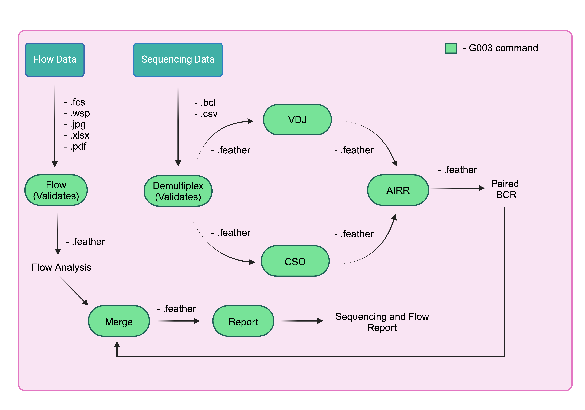

10x pipeline¶
After you have a validated merged dataframe in from validation, you can begin the 10X pipeline which consists of demultiplexing, vdj, and feature counting.

CellRanger 7.1.0
The cellranger version in this pipeline is 7.1.0
Flow¶
The following will analyze the flow path and output a dataframe that will be used in analysis. It computes each count of each gate that are useful in frequency analysis.
$ g00x g003 pipeline flow -o g003/G003/output/flow /path/to/flow
import pandas as pd
from g00x.data import Data
from g00x.flow.flow import parse_flow_data
from pathlib import Path
data = ctx.obj["data"]
folder = 'path/to/flow'
flow_data = parse_flow_data(data, folder)
out = Path(out)
output_feather = Path(out.parent / (out.stem + ".feather"))
output_csv = Path(out.parent / (out.stem + ".csv"))
Here is what the flow dataframe will look like.
| run_purpose | run_date | sort_id | ptid | group | weeks | visit_id | probe_set | sample_type | sort_software_dv | sort_file_type | sample_tube | gate | phenotype | value_type | extention | file_path | file_subset | value | branch | easy_name | notes | sort_pool | hashtag | |
|---|---|---|---|---|---|---|---|---|---|---|---|---|---|---|---|---|---|---|---|---|---|---|---|---|
| 119 | PreS | 2022-08-25 | S6C | G003831 | 2 | -5 | V091 | eODGT8 | PBMC | DV | Summary | T1 | P11 | IgD+/Antigen++ | count | .csv | ['g003/G003/sorting/G003/Prescreens/Prescreen_RunDate220825_UploadDate221021/PopulationSummaryFilesFromDV/PreS_220825_S6C_G003831_V091_eODGT8_PBMC_DV_Summary_T1_a.csv'] | ['a'] | 50 | IgD+ | antigen_pos_igd_pos_b_cells | nan | ||
| 2461 | PreS | 2022-11-04 | S6C | G003136 | 2 | 8 | V200 | eODGT8 | PBMC | DV | Summary | T1 | P13 | IgD+/KO- | count | .csv | ['g003/G003/sorting/G003/Prescreens/Prescreen_RunDate221104_UploadDate221129/PopulationSummaryFilesFromDV/PreS_221104_S6C_G003136_V200_eODGT8_PBMC_DV_Summary_T1_a.csv'] | ['a'] | 190682 | IgD+ | nan | |||
| 2754 | PreS | 2022-11-04 | S6C | G003947 | 2 | 8 | V200 | Cg28v2 | PBMC | DV | Summary | T1 | P31 | IgG-IgM-/IgA+/KO- | count | .csv | ['g003/G003/sorting/G003/Prescreens/Prescreen_RunDate221104_UploadDate221129/PopulationSummaryFilesFromDV/PreS_221104_S6C_G003947_V200_Cg28v2_PBMC_DV_Summary_T1_a.csv'] | ['a'] | 10498 | IgA+ | nan | |||
| 4485 | Sort | 2022-10-25 | S6C | G003831 | 2 | 4 | V160 | eODGT8 | PBMC | DV | Summary | T1 | P27 | IgG-IgM-IgD- | count | .csv | ['g003/G003/sorting/G003/Sorts/Sort_RunDate221025_UploadDate221101/ClinicalSamples/PopulationSummaryFilesFromDV/Sort_221025_S6C_G003831_V160_eODGT8_PBMC_HT02_DV_Summary_T1_P03_a.csv'] | ['a'] | 100696 | nan | P03 | HT02 | ||
| 2343 | PreS | 2022-11-04 | S6C | G003136 | 2 | -5 | V091 | eODGT8 | PBMC | DV | Summary | T1 | P12 | IgD+/Antigen++/KO- | count | .csv | ['g003/G003/sorting/G003/Prescreens/Prescreen_RunDate221104_UploadDate221129/PopulationSummaryFilesFromDV/PreS_221104_S6C_G003136_V091_eODGT8_PBMC_DV_Summary_T1_a.csv'] | ['a'] | 47 | IgD+ | epitope_pos_igd_pos_b_cells_rev | nan |
Demultiplexing¶
The input to the demultiplexing part of the pipeline will be the sequencing and flow file paths
$ g00x g003 pipeline demultiplex -o g003/G003/output/demultiplex -f /path/to/flow -s /path/to/sequencing
import pandas as pd
from g00x.data import Data
from g00x.sequencing.tenX import run_demultiplex
flow_path = "path/to/flow"
sequencing_path = "path/to/sequencing"
data = Data()
merged_dataframe: pd.DataFrame = merge_flow_and_sequencing(data, flow_path, sequencing_path) # type: ignore
demultiplex_df = run_demultiplex(data, merged_dataframe, out, overwrite)
demultiplex_df.to_csv("demultiplex.csv")
demultiplex_df.to_csv("demultiplex.feather")
The demulitplex algorithm will add the following fields in demultiplex output
| Column | Definition |
|---|---|
| vdj_run_dir | The full path to the vdj run directory, e.g. the Illumina directory |
| cso_run_dir | The full path to the cso run directory, e.g. the Illumina directory |
| vdj_sample_name | The unique vdj sample name given to each row |
| cso_sample_name | The unique cso sample name given to each row |
| vdj_fastq_dir | The full path to the vdj fastq directory |
| cso_fastq_dir | The full path to the cso fastq directory |
An example demultiplexing output dataframe is found below.
| ptid | group | weeks | visit_id | probe_set | sample_type | run_date | sort_pool | hashtag | run_dir_path | pool_number | sorted_date | vdj_sequencing_replicate | cso_sequencing_replicate | vdj_lirary_replicate | cso_library_replicate | bio_replicate | vdj_index | feature_index | vdj_run_id | cso_run_id | vdj_run_dir_path | cso_run_dir_path | vdj_fastq_dir | vdj_sample_name | cso_fastq_dir | cso_sample_name | |
|---|---|---|---|---|---|---|---|---|---|---|---|---|---|---|---|---|---|---|---|---|---|---|---|---|---|---|---|
| 0 | G003516 | 1 | -5 | V091 | eODGT8 | PBMC | 2022-09-27 | P01 | HT01 | /mnt/fsx/workspace/jwillis/repos/G00x/g003/G003/sequencing/G003/run0002 | P01 | 2022-09-27 | 0 | 0 | 0 | 0 | 0 | SI-TT-D6 | SI-TN-D6 | 221006_VH00497_31_AAAVKCLHV | 221006_VH00497_31_AAAVKCLHV | /mnt/fsx/workspace/jwillis/repos/G00x/g003/G003/sequencing/G003/run0002/221006_VH00497_31_AAAVKCLHV | /mnt/fsx/workspace/jwillis/repos/G00x/g003/G003/sequencing/G003/run0002/221006_VH00497_31_AAAVKCLHV | /mnt/fsx/workspace/jwillis/repos/G00x/g003/G003/sequencing/G003/run0002/working_directory/demultiplexed/29cc0e71cb9200226957921707138c5c/outs/fastq_path | vdj-SI-TT-D6 | /mnt/fsx/workspace/jwillis/repos/G00x/g003/G003/sequencing/G003/run0002/working_directory/demultiplexed/29cc0e71cb9200226957921707138c5c/outs/fastq_path | cso-SI-TN-D6 |
| 1 | G003516 | 1 | 4 | V160 | eODGT8 | PBMC | 2022-09-27 | P01 | HT02 | /mnt/fsx/workspace/jwillis/repos/G00x/g003/G003/sequencing/G003/run0002 | P01 | 2022-09-27 | 0 | 0 | 0 | 0 | 0 | SI-TT-D6 | SI-TN-D6 | 221006_VH00497_31_AAAVKCLHV | 221006_VH00497_31_AAAVKCLHV | /mnt/fsx/workspace/jwillis/repos/G00x/g003/G003/sequencing/G003/run0002/221006_VH00497_31_AAAVKCLHV | /mnt/fsx/workspace/jwillis/repos/G00x/g003/G003/sequencing/G003/run0002/221006_VH00497_31_AAAVKCLHV | /mnt/fsx/workspace/jwillis/repos/G00x/g003/G003/sequencing/G003/run0002/working_directory/demultiplexed/29cc0e71cb9200226957921707138c5c/outs/fastq_path | vdj-SI-TT-D6 | /mnt/fsx/workspace/jwillis/repos/G00x/g003/G003/sequencing/G003/run0002/working_directory/demultiplexed/29cc0e71cb9200226957921707138c5c/outs/fastq_path | cso-SI-TN-D6 |
VDJ¶
The output of demultiplexing pipeline will be used as input, see the pipeline
The following will run the VDJ pipeline from the demultiplex dataframe and output vdj.feather inside of the output folder.
Run it from demultiplexed dataframe
$ g00x g003 pipeline vdj -o g003/G003/output/vdj -d output/demultiplexed.feather
You can run the same with the following python code.
from g00x.sequencing.tenX import run_vdj
from g00x.data import Data
data = Data()
demultiplex_dataframe = pd.read_feather(demultiplex_dataframe_path)
run_vdj(data, demultiplex_dataframe, out)
The output vdj dataframe will only contain one additional field
| Column | Definition |
|---|---|
| vdj_output | The full path to the vdj output folder |
CSO¶
This CSO pipeline will run the cellranger count part and output a feature matrix. It also uses the demultiplex.feather as input.
The following will run the CSO pipeline from the demultiplex dataframe and output cso.feather inside of the output folder.
Run it from demultiplexed dataframe
$ g00x g003 pipeline cso -o g003/G003/output/cso -d output/demultiplexed.feather
You can run the same with the following python code.
from g00x.sequencing.tenX import run_cso
from g00x.data import Data
data = Data()
demultiplex_dataframe = pd.read_feather(demultiplex_dataframe_path)
run_cso(data, demultiplex_dataframe, out)
The output cso dataframe will only contain one additional field
| Column | Definition |
|---|---|
| cso_output | The full path to the cso output folder |
AIRR¶
The output of the VDJ and CSO can now be combined to get a final sequencing dataframe. This is the final sequencing dataframe that will be used for the analysis.
The AIRR protocol does the following.
It will...
- Run SADIE AIRR on the VDJ contigs to get a formalized AIRR dataframe.
- Analyze the feature barcodes and assign cellids to the correct participant.
- Add the PubIDs to the AIRR dataframe.
- Run mutational analysis
- Run iGL assignment to all sequences
- Determine if sequence is VRC01 class
- Add mutational sets (find what mutations are VRC01-like)
- Cluster sequences
- Determine isotype
The following will run the AIRR pipeline from the VDJ and CSO dataframes and output airr.feather inside of the output folder.
Run it from VDJ and CSO dataframes
$ g00x g003 pipeline airr -o g003/G003/output/airr -v output/vdj.feather -c output/cso.feather
You can run the same with the following python code.
from g00x.data import Data
from g00x.sequencing.airr import run_airr
vdj_out = 'output/vdj.feather'
cso_out = 'output/cso.feather'
data = Data()
vdj_dataframe = pd.read_feather(vdj_out)
cso_dataframe = pd.read_feather(cso_out)
output_df = run_airr(data, vdj_dataframe, cso_dataframe, out, overwrite)
An output dataframe will take the following:
| | cellid | pubID | ptid | group | weeks | visit_id | probe_set | sample_type | run_date | sort_pool | hashtag | run_dir_path | pool_number | sorted_date | vdj_sequencing_replicate | cso_sequencing_replicate | vdj_lirary_replicate | cso_library_replicate | bio_replicate | vdj_index | feature_index | vdj_run_id | cso_run_id | vdj_run_dir_path | cso_run_dir_path | vdj_fastq_dir | vdj_sample_name | cso_fastq_dir | cso_sample_name | vdj_output | cso_output | sadie_airr_path | paired_sadie_airr_path | cellhash | sequence_id_heavy | sequence_heavy | reference_name_heavy | locus_heavy | stop_codon_heavy | vj_in_frame_heavy | v_frameshift_heavy | productive_heavy | rev_comp_heavy | complete_vdj_heavy | v_call_top_heavy | v_call_heavy | d_call_top_heavy | d_call_heavy | j_call_top_heavy | j_call_heavy | c_call_heavy | sequence_alignment_heavy | germline_alignment_heavy | sequence_alignment_aa_heavy | germline_alignment_aa_heavy | v_alignment_start_heavy | v_alignment_end_heavy | d_alignment_start_heavy | d_alignment_end_heavy | j_alignment_start_heavy | j_alignment_end_heavy | c_alignment_start_heavy | c_alignment_end_heavy | v_sequence_alignment_heavy | v_sequence_alignment_aa_heavy | v_germline_alignment_heavy | v_germline_alignment_aa_heavy | d_sequence_alignment_heavy | d_sequence_alignment_aa_heavy | d_germline_alignment_heavy | d_germline_alignment_|